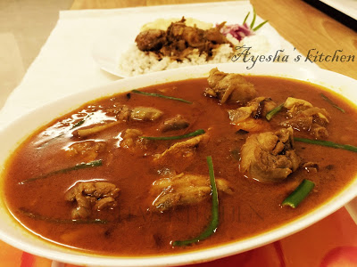

Malabar Spicy Chicken Curry

Ingredients
- Chicken: 1 kg (marinated with 1 tsp turmeric powder and salt, and refrigerated)
- Sliced onion - 1
- Chopped tomato -1
- Green chili -2 nos
- Garlic chopped - 2 tsp
- Ginger garlic and fennel seed paste - 2 tbsp
- Turmeric powder -1 tsp
- Kashmiri chili powder -3 tbsp
- Coriander powder -4 tbsp
- Garam masala powder - 1 tsp
- Curry leaves
- Coriander leaves
- Salt
- Oil
- Small onion
Preparation
- Heat oil in a vessel and add green chilies ,saute for a while.
- When fine aroma comes, add chopped garlic.
- Again saute it and then add sliced onion and cook until golden.
- Then add the chopped tomato along with required salt.
- Close the lid and cook for few minutes.
- Now add ginger,garlic and fennel seed paste.
- Let it cook until the gravy reaches a thick pureed consistency.
- Then add the marinated chicken pieces to it and Mix well.
- Now add turmeric powder, chili powder, coriander powder and finally garam masala powder .Mix well.
- Add required salt and put coriander leaves.
- Do not add water right now , let the chicken cook well in the gravy. .
- When the chicken is done , add required amount of boiled water. Do not add normal water.
- Cook it, until the oil separates.
- Heat a pan and add some oil.
- Fry the finely chopped small onions and curry leaves.
- When done pour it over the curry.
Serve hot with ghee rice, chappathi, puri....